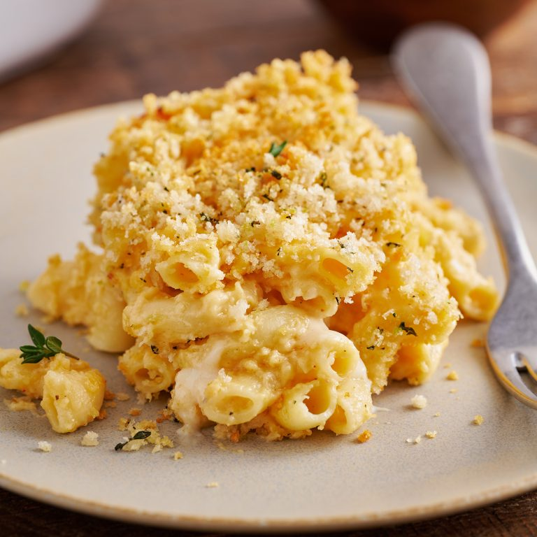

Panko Mac and Cheese Recipe

Description
Mac and cheese is a staple and simple dish among the American diet. Though not a very healthy dish,
It is a very delicious meal that can be added with a ton of different ingredients.
This recipe will be baked in an oven using Panko Crumbs
Ingredients
- Cooked macaroni 1kg
- Butter 10g
- Olive Oil 5g
- Flour 100g
- Milk 500ml
- Whipping Cream 200ml
- Shredded Chedar Cheese 400g
- Shredded Gouda Cheese 400g
- Shredded Gruyere Cheese 200g
- Panko Flakes
Directions
- Preheat oven to 200C.
- Cook all of your pasta in a pot until just shy of completely cooked.
- In a seperate pan combine butter, flour, and olive oil.
- Pour cooked pasta into a large baking dish
- Drizzle your flour mix and milk over the pan of pasta
- Add cheese to the pan and mix it all together
- Sprinkle Panko Flakes until pan is covered then add to oven and cook for 30 minutes and
- Serve hot